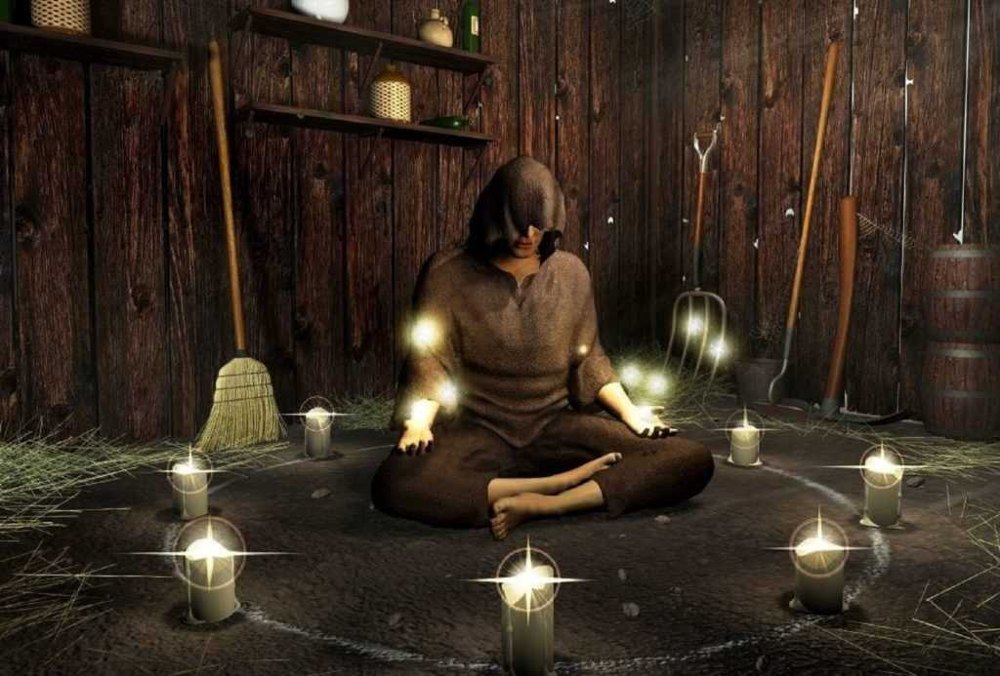
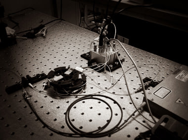

О сайте
Добро пожаловать на сайт Таро онлайн! Здесь вы можете погадать на разные способы, воспользовавшись нашими разнообразными методами гадания, такими как карта дня, гадание на вопрос, гадание на любовь, на будущее и многие другие.
Отличительной особенностью нашего сайта является его стилистическое оформление, выполненное в духе интернет-ресурсов начала 2000-х годов, что придаёт ностальгический шарм и создаёт атмосферу старых времён.

Но самой главной фишкой нашего сайта является то, что мы используем для работы квантовый генератор случайных чисел QRNG: Quantis от ID Quantique. Это устройство предоставляет независимые и непредвзятые источники истинной случайности, что делает наши онлайн-гадания ещё более уникальными и захватывающими!
 Вернуться назад